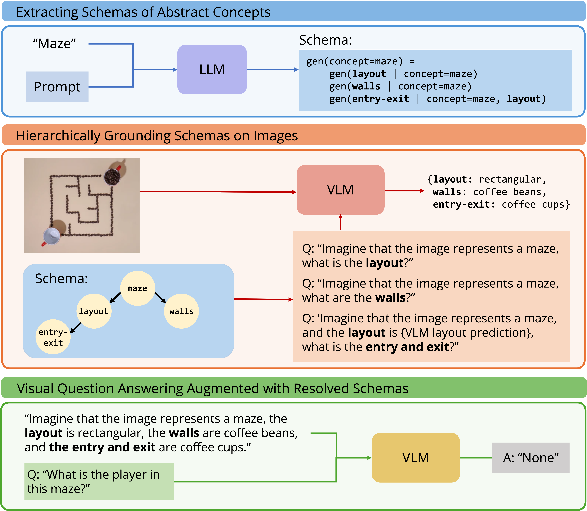
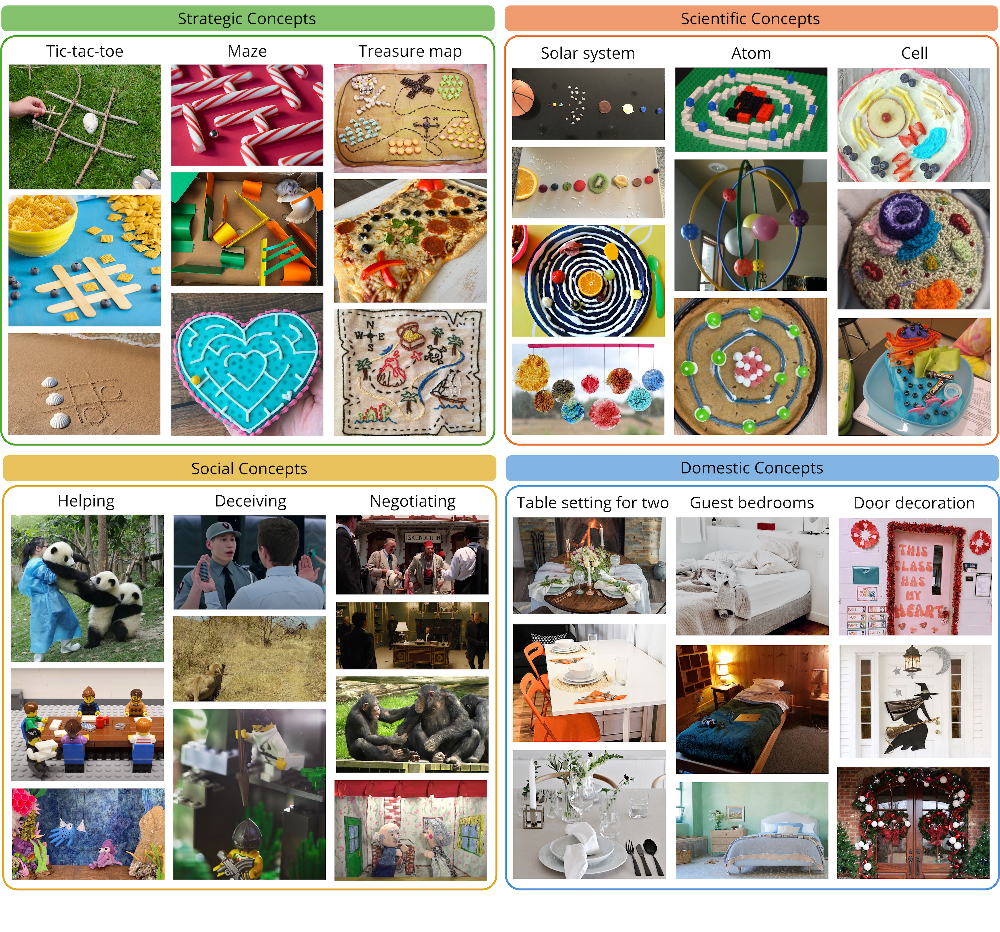
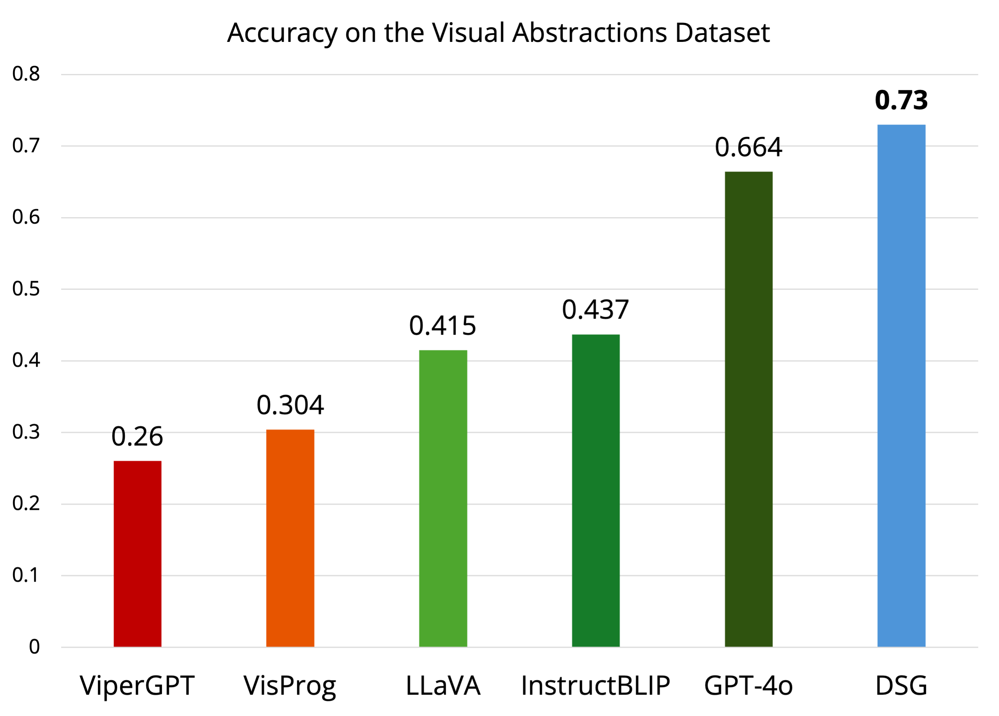

What Makes a Maze Look Like a Maze?
ICLR 2025
Abstract
A unique aspect of human visual understanding is the ability to flexibly interpret abstract concepts: acquiring lifted rules explaining what they symbolize, grounding them across familiar and unfamiliar contexts, and making predictions or reasoning about them. While off-the-shelf vision-language models excel at making literal interpretations of images (e.g., recognizing object categories such as tree branches), they still struggle to make sense of such visual abstractions (e.g., how an arrangement of tree branches may form the walls of a maze). To address this challenge, we introduce Deep Schema Grounding (DSG), a framework that leverages explicit structured representations of visual abstractions for grounding and reasoning. At the core of DSG are schemas—dependency graph descriptions of abstract concepts that decompose them into more primitive-level symbols. DSG uses large language models to extract schemas, then hierarchically grounds concrete to abstract components of the schema onto images with vision-language models. The grounded schema is used to augment visual abstraction understanding. We systematically evaluate DSG and different methods in reasoning on our new Visual Abstractions Dataset, which consists of diverse, real-world images of abstract concepts and corresponding question-answer pairs labeled by humans. We show that DSG significantly improves the abstract visual reasoning performance of vision-language models, and is a step toward human-aligned understanding of visual abstractions.
Abstract concepts
Humans possess the remarkable ability to flexibly acquire and apply abstract concepts when interpreting the concrete world around us. Consider the concept "maze": our mental model can interpret mazes constructed with conventional materials (e.g., drawn lines) or unconventional ones (e.g., icing), and reason about mazes across a wide range of configurations and environments (e.g., in a cardboard box or on a knitted square). Our goal is to build systems that can make such flexible and broad generalizations as humans do. This necessitates a reconsideration of a fundamental question: what makes a maze look like a maze? A maze is not defined by concrete visual features such as the specific material of walls or particular perpendicular intersections, but by lifted rules over symbols—a plausible model for a maze includes its layout, the walls, and the designated entry and exit.
Current VLMs often struggle to reason about visual abstractions at a human level, frequently defaulting to literal interpretations of images, such as a collection of object categories. Here, we propose Deep Schema Grounding (DSG), a framework for models to interpret visual abstractions. At the core of DSG are schemas—a dependency graph description of abstract concepts. Schemas characterize common patterns that humans use to interpret the visual world, generalize efficiently from limited data, and reason across multiple levels of abstraction for flexible adaptation. A schema for "helping" allows us to understand relations between characters in a finger puppet scene, while a schema for "tic-tac-toe" allows us to play the game even when the grid is composed of hula hoops instead of drawn lines. A schema for "maze" makes a maze look like a maze.

Deep Schema Grounding
Deep Schema Grounding (DSG) explicitly uses schemas generated by and grounded by large pretrained models to reason about visual abstractions. Concretely, we model schemas as programs encoding directed acyclic graphs (DAGs), which decompose an abstract concept into a set of more concrete visual concepts as subcomponents. The full framework is composed of three steps.
1. First, we extract schema definitions of abstract concepts from a LLM.
2. Next, DSG hierarchically queries a VLM, first grounding concrete symbols in the DAG (i.e., symbols that do not depend on the interpretation of other symbols), then using those symbols as conditions to ground more abstract symbols.
3. Finally, we use the resolved schema, including the grounding of all its components, as an additional context into a vision-language model to improve visual reasoning.
Our method is a general framework for abstract concepts that does not depend on specific models; the LLMs and VLMs used are interchangeable.

Visual Abstractions Dataset
To investigate the capabilities of models in understanding abstract concepts, we introduce the Visual Abstractions Dataset (VAD). VAD is a visual question-answering dataset that consists of diverse, real-world images representing abstract concepts. The abstract concepts span 4 different categories: strategic concepts that are characterized by rules and patterns (e.g., "tic-tac-toe"), scientific concepts of phenomena that cannot be visualized in their canonical forms (e.g., "atoms"), social concepts that are defined by theory-of-mind relations (e.g., "deceiving"), and domestic concepts of household objectives that cannot be directly defined by specific arrangements of objects (e.g, "table setting for two").
Each image is an instantiation of an abstract concept, and is paired with questions that probe understanding of the visual abstraction; for example, "Imagine that the image represents a maze. What is the player in this maze?" The VAD comprises 540 of such examples, with answers labeled by 5 human annotators from Prolific.

Results
We evaluate Deep Schema Grounding on the Visual Abstractions Dataset, and show that DSG consistently improves performance of vision-language models across question types, abstract concept categories, and base models. Notably, DSG improves GPT-4o by 6.6 percent points overall (↑ 9.9% relative improvement), and, in particular, demonstrates a 10 percent point improvement (↑ 16.6% relative improvement) in questions that involve counting.

Below, we show examples of schemas for concepts across categories in the Visual Abstractions Dataset, as well as the visual features that they may be grounded to.